three-broom 사용법
scene/editor — TrenchBroom 계열 브러시 레벨 에디터. Svelte 5 + WebGPU.
이 문서의 스크린샷은 전부 실제 에디터를 띄워서 찍은 것이다.
01시작하기
레포 루트에서:
pnpm dev:editor # http://localhost:8126
three-broom은 브러시(brush)로 레벨을 짜는 에디터다. 브러시는 폴리곤 메시가 아니라 볼록 다면체(convex polyhedron) — "평면 여러 장이 둘러싼 속이 찬 덩어리"다. 이게 전제라서 이 에디터의 거의 모든 규칙이 여기서 따라 나온다.
- 모든 솔리드는 반드시 볼록하다. 오목한 모양은 여러 덩어리로 쪼개서 만든다.
- 그래서 CSG(빼기/교집합/합치기)가 1급 시민이고, 결과가 여러 조각으로 나오는 게 정상이다.
- 면(face)은 평면 + 머티리얼 + UV로 정의된다. 정점을 옮기면 평면이 따라 움직인다.
02화면 구성
| 영역 | 내용 |
|---|---|
| 헤더 왼쪽 | three-broom 로고 · file 메뉴 · 현재 파일명(untitled.tscene, 수정되면 *) |
| 헤더 가운데 | 툴 15개. 클릭해도 되고 단축키 한 글자로도 바뀐다. |
| 헤더 오른쪽 | unshaded/shaded 룩 · >_ 콘솔 · bake · keys · prefs · 1 2 3 4 팬 레이아웃 |
| 뷰포트 | 팬 1~4개. 3D 팬 하나 + 직교 팬(top·front·side). 각 팬 좌상단에 이름과 축이 적혀 있다. |
| 인스펙터 | 우측. map / entity / face / issues 4개 탭. 선택을 따라 자동으로 탭이 바뀐다. |
| 푸터 왼쪽 | grid 250 mm · selected N · 현재 툴의 힌트 또는 방금 일어난 일 |
| 푸터 오른쪽 | 자주 쓰는 단축키 치트시트 |
푸터 왼쪽을 항상 봐라. 이 에디터는 모달 다이얼로그를 거의 안 띄운다.
"왜 아무 일도 안 일어나지?" 싶을 때의 답은 대부분 푸터에 문장으로 적혀 있다 —
selected 0, the selection overlaps nothing to cut, carved 2 같은 식으로.
⌘ 표기. 키맵 패널과 푸터는 모든 플랫폼에서 ⌘로 찍는다. Windows/Linux에서는 Ctrl로 읽으면 된다. 이 문서는 Ctrl로 적는다.
03뷰포트 조작
| 키 / 조작 | 하는 일 |
|---|---|
| Ctrl+1…4 | 팬 1개 / 2개 / 3개 / 4개 레이아웃 |
| Space | 마우스가 올라가 있는 팬을 최대화 / 원복 |
| F | 선택한 것을 그 팬에 꽉 차게 프레이밍 |
| Shift+F | 모든 팬에서 프레이밍 |
| 3D 팬 — 우클릭 드래그 | 둘러보기 |
| 3D 팬 — WASD / QE | 비행 이동 / 아래·위 |
| 3D 팬 — 휠 | 앞뒤 |
| 직교 팬 — 휠 | 줌 |
| 직교 팬 — 가운데 버튼 드래그 | 패닝 |
정밀한 작업은 직교 팬에서. 3D 팬은 확인용이라고 생각하는 게 편하다. 직교 팬은 화면 방향이 곧 축이라 그리기·자르기·클립 평면 잡기가 훨씬 정확하다. 실제로 이 문서의 CSG/클립 예제도 전부 front 팬에서 만들었다.
04그리드
푸터 맨 왼쪽의 grid 250 mm가 현재 그리드다. [ 로 촘촘하게, ] 로 성기게.
그리드는 단순한 눈금이 아니라 거의 모든 조작의 스냅 단위이고, 심지어 몇몇 명령의 수치 인자다:
- 솔리드를 그릴 때 · 옮길 때 · 정점을 끌 때 → 전부 그리드에 스냅된다.
- ←→↑↓ 넛지 = 한 칸.
- hollow의 벽 두께 = 현재 그리드 크기. 25 cm 그리드에서 hollow하면 벽 25 cm짜리 방이 나온다.
- 클립 점도 그리드에 스냅된다.
05선택
선택 툴은 V. 이 에디터에서 가장 자주 눌러야 하는 키다.
| 조작 | 하는 일 |
|---|---|
| 클릭 | 솔리드 선택 (기존 선택 대체) |
| Shift+클릭 | 선택 토글 (추가/제거) |
| Alt+클릭 | 면(face) 하나만 선택 — 머티리얼 작업의 출발점 |
| 드래그 | 밴드(사각 영역) 선택 — 걸치기만 해도 잡힌다 |
| Alt+드래그 | 밴드 안에 완전히 들어온 것만 선택 |
| Esc | 그룹에서 나가기 |
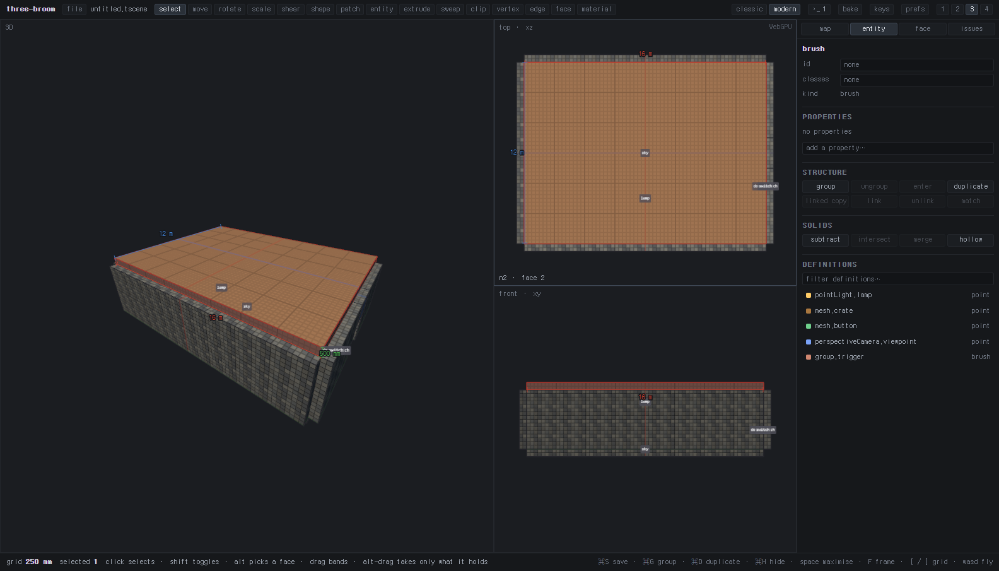
selected 1, 인스펙터가 entity 탭으로 넘어간다.다른 툴을 들고 있으면 클릭이 선택이 아니다. 클립 툴을 들고 클릭하면 점이 찍히고, shape 툴을 들고 드래그하면 새 상자가 그려진다. 선택은 반드시 먼저 하고, 그 다음에 툴 키를 눌러라. 순서가 반대면 아무 일도 안 일어난다.
06툴 15종
툴 키는 전부 수식키 없는 한 글자다. 각 툴을 들면 푸터에 그 툴의 사용법이 그대로 뜬다 — 아래 표의 마지막 열이 바로 그 문장이다.
| 키 | 툴 | 푸터에 뜨는 힌트 |
|---|---|---|
| V | select | 클릭 선택 · shift 토글 · alt 면 선택 · 드래그 밴드 · alt-드래그는 완전히 포함된 것만 |
| G | move | 드래그로 이동 · alt 들어올리기 · shift 한 축 고정 · 방향키 한 칸씩 |
| R | rotate | 선택 주위를 드래그 · 15° 단위 · alt 누르면 1° |
| T | scale | 반대 코너 기준으로 스케일 · shift 균등 · alt 중심 기준 |
| H | shear | 위/아래를 옆으로 드래그 · 반대쪽은 고정 |
| B | shape | 드래그로 솔리드 그리기 · tab 모양 변경 · ,. 분할 수 · -+ 깊이 |
| P | patch | 드래그로 그리기 · 제어점 드래그로 휘기 · tab 모양 · rc 스팬 추가, shift로 제거 · f 뒤집기 · s 그리드 스냅 |
| N | entity | 클릭해서 배치 · tab 타입 변경 |
| X | extrude | 면을 법선 방향으로 드래그 · 클릭으로 면 선택 · shift 추가 |
| K | sweep | 면을 드래그해 뒤로 새 솔리드를 남김 · ,. 개수 |
| C | clip | 클릭해서 점 찍기 · tab 남길 쪽 전환 · enter 자르기 · backspace 한 점 취소 |
| Y | vertex | 정점 드래그 · 클릭 선택 · shift 추가 · alt 수직 평면에서 이동 |
| U | edge | 모서리 드래그 · 클릭 선택 · shift 추가 · alt 수직 평면에서 이동 |
| I | face | 면 중심을 드래그 · 클릭 선택 · shift 추가 · x 누르면 익스트루드 |
| M | material | 드래그로 면 밀기 · 클릭 선택 · alt+클릭 복사 · 방향키 미세이동 · ,. 회전 · -= 크기 · 0 리셋 · 9 맞춤 · jl 뒤집기 |
왜 CSG 단축키에 전부 Ctrl이 붙어 있나? 수식키 없는 알파벳은 전부 툴 차지이기 때문이다. 그래서 문서를 바꾸는 명령은 예외 없이 Ctrl 조합을 쓴다.
07솔리드 그리기
B(shape) 를 들고 팬에서 드래그하면 상자가 생긴다. Tab으로 6가지 모양을 순환한다:
cuboid → wedge → cylinder → cone → sphere → icosphere
- , . — 옆면 개수(실린더/콘/스피어의 각지기 정도)
- - + — 화면 안쪽 방향의 두께
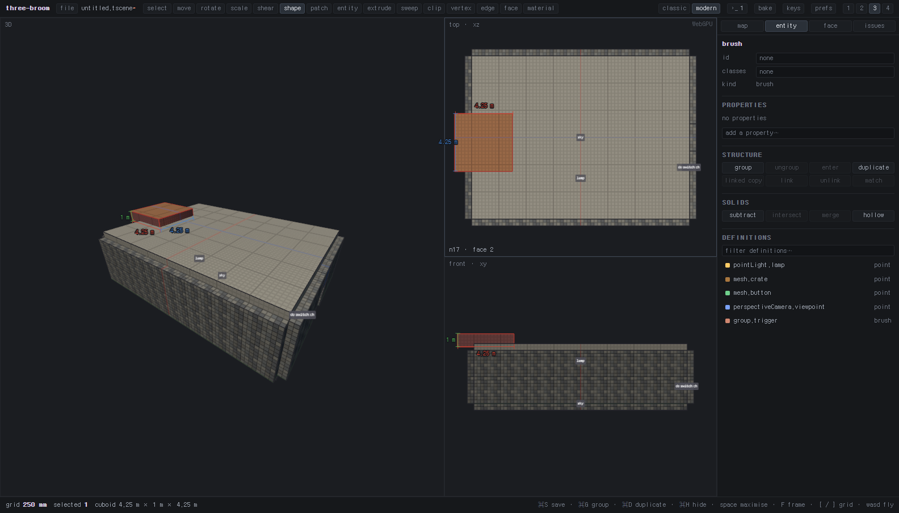
cuboid 2.5 m × 3.5 m × 1 m처럼 실제 치수가 뜬다.직교 팬은 2차원밖에 못 주므로 세 번째 축의 두께는 툴이 정한다. 그린 다음 -/+로 조정하거나, 다른 팬에서 X(extrude)로 밀어내면 된다.
08CSG — subtract · intersect · merge · hollow
네 개 다 선택한 솔리드에 대해 즉시 실행되는 명령이다. 툴이 아니다 —
어떤 툴을 들고 있든 상관없다. 인스펙터 entity 탭의 SOLIDS 버튼 줄에도 같은 게 있다.
| 단축키 | 명령 | 선택이 의미하는 것 | 필요 개수 |
|---|---|---|---|
| Ctrl+- | subtract | 선택 = 칼. 선택한 솔리드가 겹치는 다른 모든 솔리드에서 깎여 나가고, 칼 자신은 삭제된다. | 1개 이상 |
| Ctrl+Shift+J | intersect | 선택한 것들이 모두 공유하는 부피만 남긴다. | 2개 이상 |
| Ctrl+J | merge | 선택한 것들의 볼록 껍질로 합친다. | 2개 이상 |
| Ctrl+Alt+J | hollow | 선택한 솔리드를 그리드 한 칸 두께의 껍데기로 만든다. | 1개 이상 |
subtract는 Blender의 불리언과 다르다. "A와 B 두 개 선택 → 빼기"가 아니다.
빼낼 모양(칼)만 선택하고 Ctrl+-를 누른다. 벽은 선택하지 않는다.
벽까지 같이 선택하면 벽도 "칼 목록"에 들어가 깎이는 대상에서 제외되고,
달리 겹치는 게 없으면 the selection overlaps nothing to cut이라며 아무 일도 안 일어난다.
문틀을 그린 상자로 벽에 구멍을 뚫는 워크플로 그대로다: 상자를 벽에 걸치게 그리고 → 상자만 선택 → Ctrl+-.
실제 동작
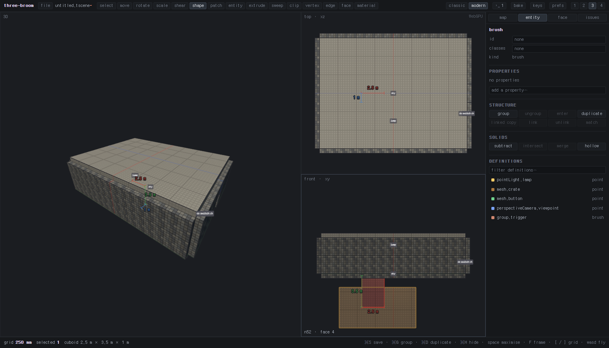
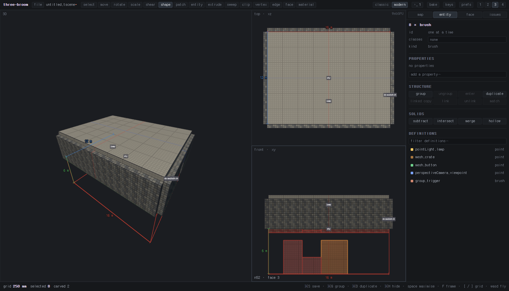
selected 8 · carved 2, 인스펙터에 8 × brush. 칼은 사라지고 홈이 파였다.왜 8개가 됐나? 브러시는 반드시 볼록해야 하는데 홈이 파인 모양은 오목하다. 그래서 결과가 볼록 조각 여러 개로 쪼개진다. 이건 버그가 아니라 이 에디터의 기본 동작이다. 겉보기는 하나의 벽이고, 파일에도 그대로 저장된다.
hollow
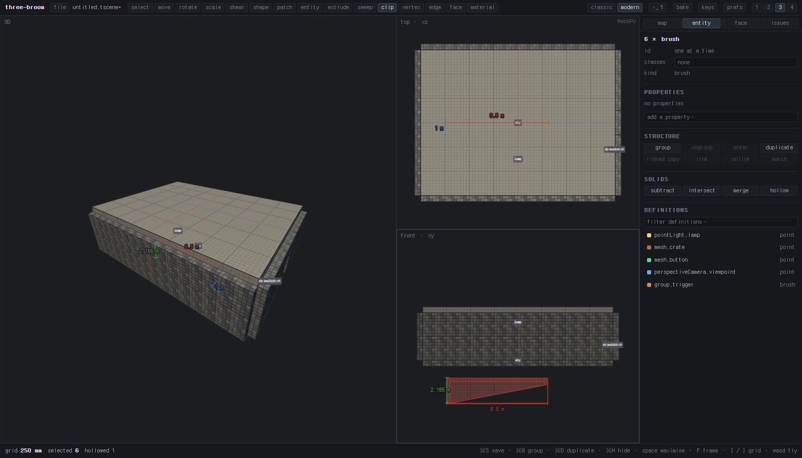
거부 메시지
CSG는 조건이 안 맞으면 조용히 아무것도 안 하지 않고, 이유를 푸터에 적는다. 그리고 실행 취소 기록도 남기지 않는다.
| 푸터 메시지 | 뜻 |
|---|---|
select the solids to cut with | 칼로 쓸 솔리드를 아무것도 선택하지 않았다 |
the selection overlaps nothing to cut | 칼이 겹치는 다른 솔리드가 없다 (벽까지 같이 선택한 경우가 대부분) |
select two solids or more to intersect / merge | 2개 미만 선택 |
those solids share no volume | 교집합이 비었다 |
merged N — the hull filled in space between them | 합쳐졌지만 볼록 껍질이 아무도 안 그린 공간을 채웠다. 의도한 게 맞는지 확인해라 |
nothing selected is thick enough to hollow at this grid size | 그리드가 너무 커서 껍데기를 만들 수 없다 → [로 촘촘하게 |
잠긴 것과 숨긴 것은 깎이지 않는다. 안 보이는 브러시는 건드릴 의도가 없었던 브러시라고 본다.
정체성 규칙: 깎인 솔리드는 원래 노드를 그대로 유지한다(id, #id, 파일 안의 위치).
늘어난 조각들만 새 노드가 되고, 원본의 레이어·그룹·.classes·프로퍼티를 물려받는다.
덕분에 저장했다 다시 열어도 파일이 통째로 뒤집히지 않는다.
09클립 툴 C
클립은 구멍을 뚫는 도구가 아니다. 점 세 개는 "이 모양으로 뚫어라"가 아니라 무한히 뻗어나가는 평면 한 장을 정의한다. 그 평면이 선택된 솔리드를 두 동강 내고, 한쪽만 남긴다. 모양대로 파내는 건 subtract다.
순서
- V로 자를 솔리드를 먼저 선택한다. (푸터에
selected 1이상이 떠야 한다) - C로 클립 툴을 든다.
- 점을 찍는다 — 직교 팬에서는 2점(세 번째 방향은 팬이 준다), 3D 팬에서는 3점.
- 점이 충분히 찍히면 어디가 잘려나갈지 팬에 미리 그려진다.
- Tab으로 남길 쪽을 바꾼다:
front→back→both(양쪽 다 남겨 두 덩어리로 쪼갬). - Enter로 확정. Backspace는 점 하나 취소.
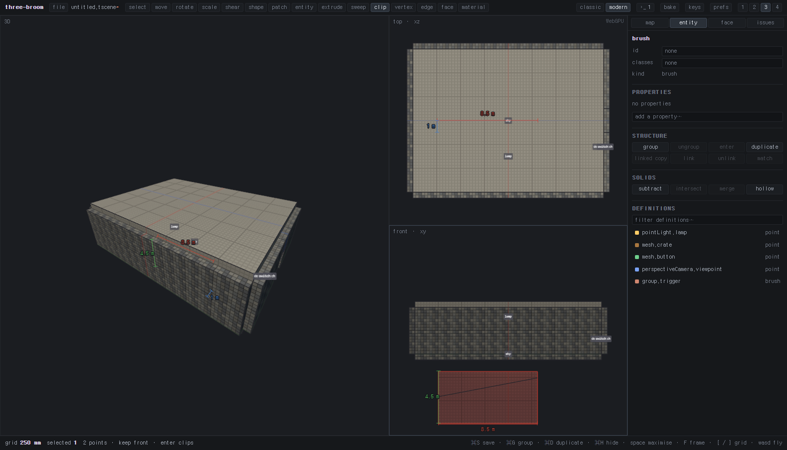
2 points · keep front · enter clips처럼 현재 상태가 뜬다.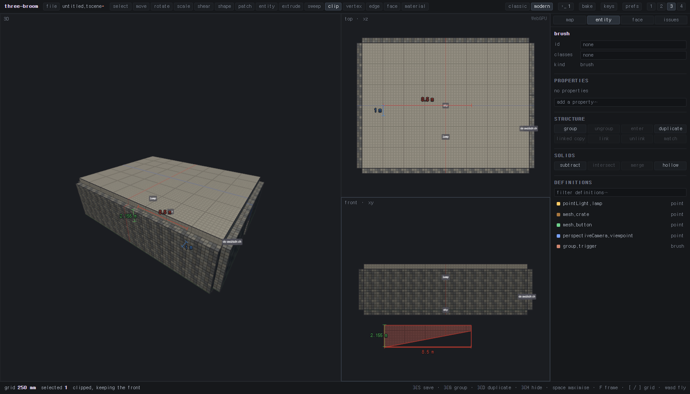
안 되는 이유 3가지
| 증상 | 원인과 해결 |
|---|---|
nothing selected to clip |
선택이 비어 있다. 클립 툴을 든 채로는 클릭이 점 찍기라서 선택이 안 된다. V로 돌아가 선택하고 → C. |
a clip plane needs three points, or two in an orthographic pane |
점이 모자라거나, 3D 팬에서 2점만 찍었다. 팬을 바꾸면 점이 초기화된다는 것도 주의. |
| 메시가 통째로 사라짐 | 한 면 위에 점 세 개를 찍었다. 그러면 평면이 그 면과 겹쳐서 "남길 쪽"이 아예 비게 되고, 솔리드 전체가 삭제된다. 점은 서로 다른 면/방향에 걸쳐서 찍어라. Ctrl+Z로 되돌리면 된다. |
미리보기가 안 그려지면 Enter도 아무 일 안 한다. 미리보기는 앞/뒤 양쪽이 모두 존재할 때만 그려진다. 이게 가장 빠른 자가진단이다.
10그룹 · 레이어 · 태그
| 단축키 | 하는 일 |
|---|---|
| Ctrl+G | 그룹 만들기 |
| Ctrl+Shift+G | 그룹 해제 |
| 더블클릭 | 그룹 안으로 들어가기 |
| Esc | 그룹에서 나오기 |
| Ctrl+D | 복제 |
| Ctrl+H | 선택 숨기기 |
| Ctrl+Shift+H | 선택만 남기고 숨기기 (isolate) |
| Ctrl+Alt+H | 전부 다시 보이기 |
| Ctrl+L | 선택 잠그기 |
| Ctrl+Shift+L | 전부 잠금 해제 |
링크드 카피
인스펙터 entity 탭의 STRUCTURE 줄에 linked copy / link / unlink / match가 있다.
링크된 그룹은 한쪽을 고치면 나머지가 자동으로 따라온다. 복도 모듈, 반복되는 방 같은 걸 만들 때 쓴다.
linked copy— 원본 옆(자기 폭만큼 +x, 그리드에 스냅)에 링크된 사본을 놓는다. 겹쳐 놓으면 구분이 안 되니까 일부러 옆에 둔다.link— 이미 있는 그룹 2개 이상을 한 세트로 묶는다.match— 수동으로 다시 맞추기. (보통은 편집할 때마다 자동으로 된다)
레이어와 태그
레이어는 map 탭에서 관리한다. 새 솔리드는 현재 레이어에 들어간다.
태그는 이름표라서 태그로 선택 / 태그만 남기기 / 태그 숨기기가 된다.
선택 전체가 이미 그 태그를 갖고 있으면 클릭이 해제로 동작한다(왕복 토글).
11인스펙터 4개 탭
| 탭 | 내용 |
|---|---|
map | 맵 전체 설정 — 레이어 목록, 태그, 월드 프로퍼티 |
entity | 선택한 것의 id / classes / kind, 프로퍼티 편집, STRUCTURE 버튼 줄, SOLIDS(CSG 4개) 버튼 줄, DEFINITIONS(배치 가능한 엔티티 목록) |
face | 선택한 면의 머티리얼과 UV — 오프셋, 회전, 스케일 |
issues | 맵 검사 결과와 원클릭 수정 |
탭은 선택을 따라 자동으로 바뀐다. 솔리드를 고르면 entity, Alt+클릭으로 면을 고르면 face로 간다.
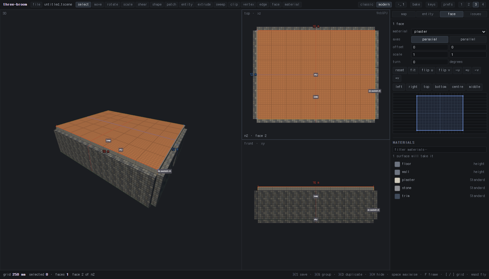
여러 개를 선택하면 헤더가 8 × brush처럼 개수로 바뀌고,
값이 서로 다른 칸은 one at a time / 빈칸으로 표시된다. 그 상태에서 값을 고치면 전부에 한 번에 적용된다.
12머티리얼과 UV M
- V + Alt+클릭으로 면을 고른다. (여러 면은 Shift 추가)
- 인스펙터
face탭에서 머티리얼을 고른다. - M(material 툴)로 UV를 손본다.
| 키 / 조작 | 하는 일 |
|---|---|
| 드래그 | 텍스처를 면 위에서 밀기 |
| Alt+클릭 | 클릭한 면의 머티리얼을 선택된 면들에 복사 (스포이드) |
| 방향키 | 미세 이동 |
| , . | 회전 |
| - = | 스케일 |
| 9 | 면에 꽉 차게 맞춤 |
| 0 | UV 리셋 |
| J L | 가로/세로 뒤집기 |
CSG를 해도 머티리얼은 유지된다. 면마다 출처 번호를 달고 다니기 때문에, 텍스처 입힌 상자로 벽을 파면 구멍 안쪽은 상자의 머티리얼, 바깥은 벽의 머티리얼로 나온다. 커널이 새로 만들어낸 면은 법선이 가장 비슷한 면에서 물려받는다.
13이슈 브라우저
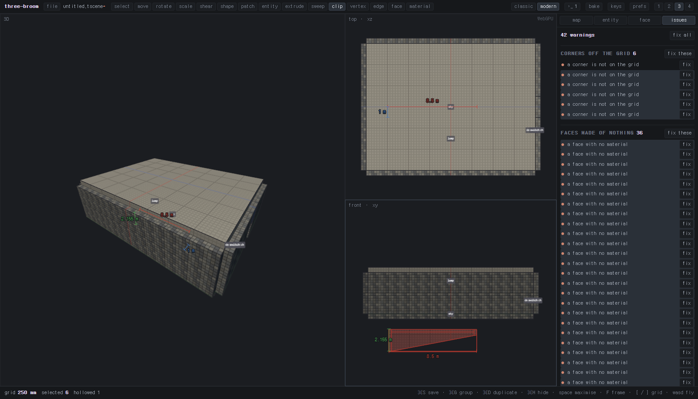
issues 탭. 맵이 조용히 망가지는 20가지 경우를 잡아내고, 대부분 원클릭 수정이 붙어 있다.대표적으로 잡히는 것들:
- 그리드에서 벗어난 정점
- 아무것도 아닌 면 (면적 0)
- 존재하지 않는 대상을 가리키는 참조
- 서로 어긋나 버린 링크드 카피
- 빈 그룹, 중복된
#id
이슈를 클릭하면 그 대상이 선택되어 화면에 보인다.
fix all은 실행 취소 하나로 되돌아간다.
고칠 수 없는 경우엔 nothing changed — that fix does not apply here라고 정직하게 말한다.
14룩과 라이트맵
헤더 오른쪽의 unshaded / shaded가 렌더링 모드다.
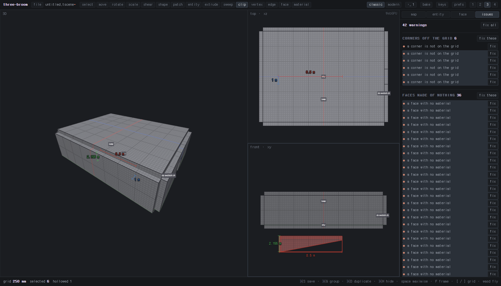
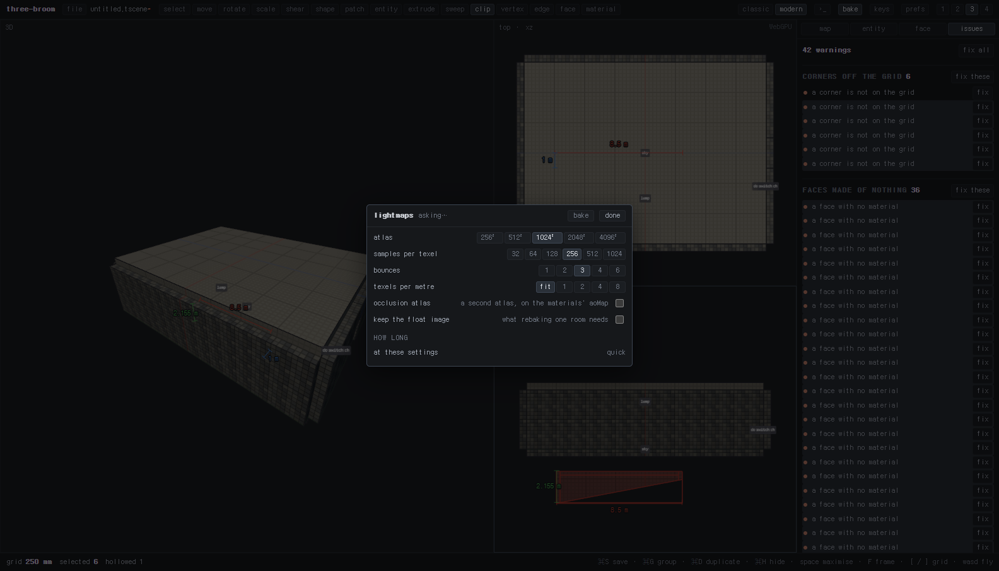
bake — 라이트맵 굽기. 진행 상황이 패널에 뜬다.15패널들
| 버튼 | 키 | 내용 |
|---|---|---|
>_ | ` | 콘솔 — 로그와 경고. 옆의 숫자는 새 메시지 개수다. |
>_ 안의 performance 탭 | — | 프레임 타임, 드로우 콜 |
bake | — | 라이트맵 굽기 |
keys | — | 키맵 편집 |
prefs | — | 환경설정 (자동저장 주기 등) |
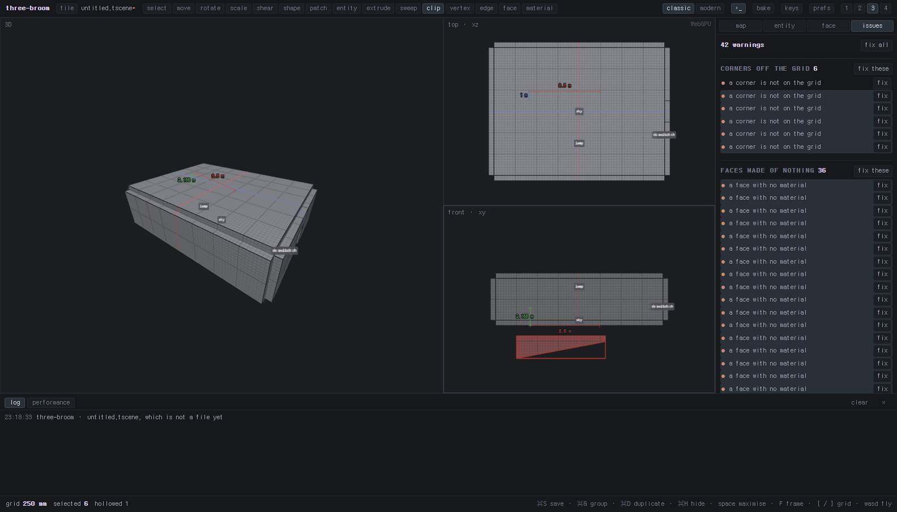
16파일과 자동저장
헤더 왼쪽 file 메뉴 = 6개 항목. 각 항목에 단축키가 같이 적혀 있다.
| 단축키 | 명령 |
|---|---|
| Ctrl+N | 새 맵 |
| Ctrl+O | 열기 |
| Ctrl+S | 저장 |
| Ctrl+Shift+S | 다른 이름으로 저장 |
| — | 되돌리기 (revert) |
파일 이름 옆의 *가 저장 안 된 변경이다.
자동저장은 브라우저 로컬 스토리지에 들어가고(three-broom:autosave),
주기는 prefs에서 바꾼다. 진짜로 저장하면 자동저장본은 버려진다.
라운드트립 보장. 저장 형식은 .tscene이고, 이 에디터는
"읽은 그대로 다시 쓴다"를 지키려고 애쓴다 — 노드는 원래 id와 파일 안의 위치를 유지하고,
CSG로 늘어난 조각만 새 노드로 추가된다. 그래서 손으로 쓴 .tscene을 열었다 저장해도 diff가 최소로 나온다.
자세한 규칙은 docs/spec-roundtrip.md와 docs/spec-brush.md에 있다.
17키맵 전체
헤더의 keys를 누르면 전체 목록이 뜬다. 키를 클릭하면 해제되고, +를 누른 뒤 원하는 조합을 치면 등록된다.
defaults로 언제든 원상복구. 변경분은 브라우저에 three-broom:keys로 저장된다.
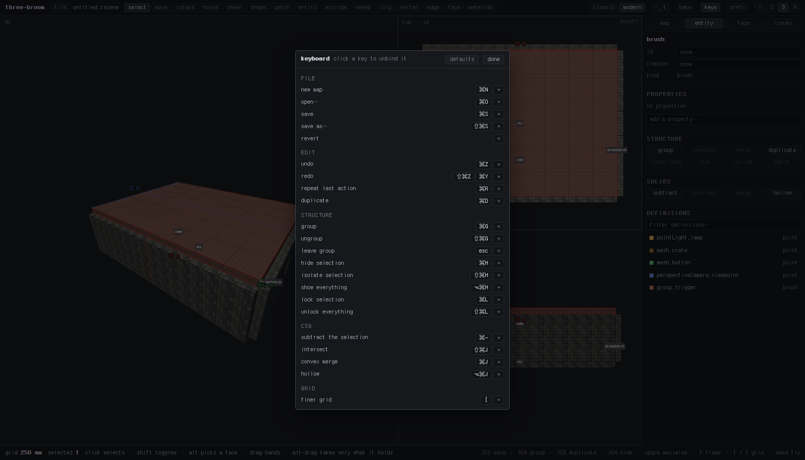
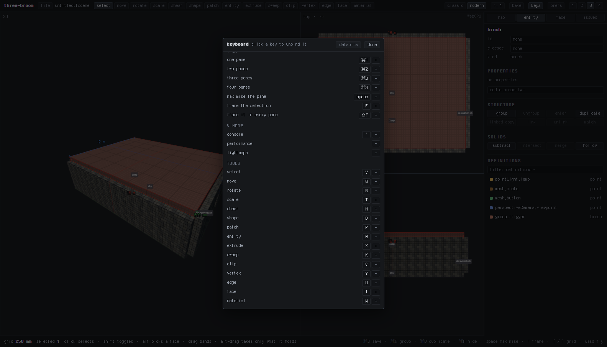
| 단축키 | 명령 |
|---|---|
| — FILE — | |
| Ctrl+N / O / S | 새 맵 / 열기 / 저장 |
| Ctrl+Shift+S | 다른 이름으로 저장 |
| — EDIT — | |
| Ctrl+Z | 실행 취소 |
| Ctrl+Shift+Z / Ctrl+Y | 다시 실행 |
| Ctrl+R | 마지막 동작 반복 |
| Ctrl+D | 복제 |
| — STRUCTURE — | |
| Ctrl+G / Ctrl+Shift+G | 그룹 / 그룹 해제 |
| Esc | 그룹에서 나가기 |
| Ctrl+H / +Shift / +Alt | 숨기기 / isolate / 전부 보이기 |
| Ctrl+L / Ctrl+Shift+L | 잠그기 / 전부 잠금 해제 |
| — CSG — | |
| Ctrl+- | subtract (선택이 칼) |
| Ctrl+Shift+J | intersect |
| Ctrl+J | convex merge |
| Ctrl+Alt+J | hollow |
| — GRID — | |
| [ / ] | 촘촘하게 / 성기게 |
| — VIEW — | |
| Ctrl+1…4 | 팬 레이아웃 |
| Space | 팬 최대화 |
| F / Shift+F | 프레이밍 / 모든 팬에서 프레이밍 |
| — WINDOW — | |
| ` | 콘솔 |
| 기본값 없음 | performance, lightmaps (직접 지정 가능) |
| — TOOLS — | |
| V G R T H | select · move · rotate · scale · shear |
| B P N | shape · patch · entity |
| X K C | extrude · sweep · clip |
| Y U I M | vertex · edge · face · material |
18자주 막히는 곳
| 증상 | 원인 |
|---|---|
| 클릭해도 선택이 안 된다 | 다른 툴을 들고 있다. V를 먼저 눌러라. 또는 그 솔리드가 잠겨 있거나 숨겨져 있다. |
| Ctrl+-를 눌렀는데 아무 일도 없다 | 푸터를 봐라. overlaps nothing to cut이면 깎일 벽까지 같이 선택한 것이다.
칼로 쓸 상자만 선택해라. |
| 클립 Enter가 먹통 | selected 0이다. 클립 툴을 든 채로는 선택이 안 되니 V로 먼저 선택. |
| 클립했더니 메시가 통째로 사라짐 | 점 세 개를 한 면 위에 찍었다. 평면이 면과 겹쳐 남길 쪽이 비었다. Ctrl+Z. |
| CSG 후에 브러시 개수가 확 늘었다 | 정상이다. 볼록 조각으로 쪼개진 것이다. |
| hollow가 거부당한다 | 그리드가 솔리드보다 두껍다. [로 촘촘하게. |
| 키가 안 먹는다 | 텍스트 입력칸에 포커스가 있다. 인스펙터 밖을 한 번 클릭해라 — 입력 중일 때는 단축키가 통째로 꺼진다. |
| 3D 팬에서 조준이 잘 안 된다 | 직교 팬에서 해라. 화면 방향이 곧 축이라 훨씬 정확하다. |
| 모양이 이상하게 뭉개져 있다 | issues 탭을 열어봐라. 그리드 밖 정점이나 면적 0인 면이 잡힐 것이다. |
스펙 문서: scene/editor/docs/spec-brush.md · scene/editor/docs/spec-roundtrip.md ·
개발 로드맵: scene/editor/ROADMAP.md